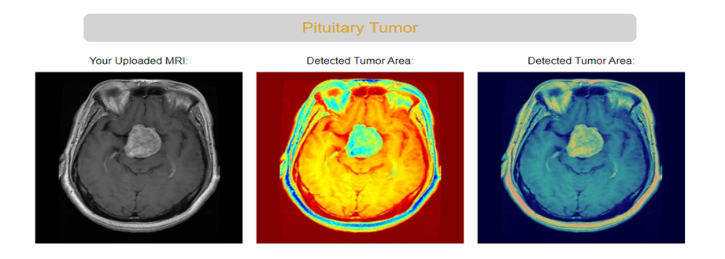
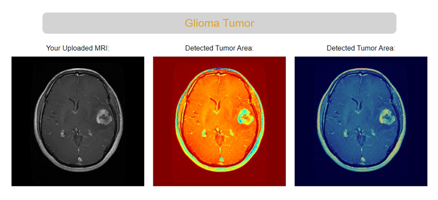
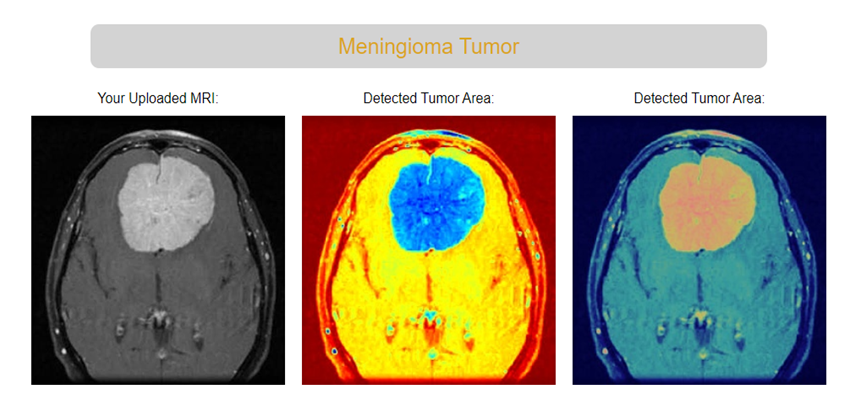
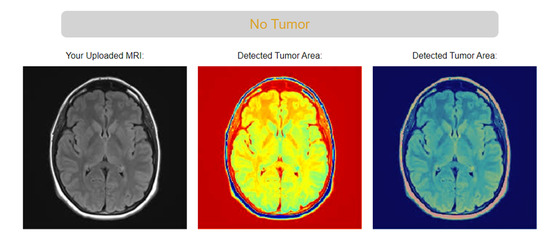

About
Developed a deep learning model for the detection and classification of brain tumors from medical imaging data. Achieved high accuracy in tumor detection and classification. Improved model interpretability with Grad-CAM, aiding in better understanding of the decision-making process.
Dataset Description
We trained our model using the Brain Tumor MRI Dataset from Kaggle, which is a compilation of data from three sources: Figshare, SARTAJ, and Br35H. The final dataset contains a total of 7022 MRI images, divided into four distinct classes Glioma: 1321 MRI images for training and 300 MRI images for testing. Meningioma: 1339 MRI images for training and 306 MRI images for testing. Pituitary: 1457 MRI images for training and 300 MRI images for testing. No Tumor: 1595 MRI images for training and 405 MRI images for testing. The dataset provided a comprehensive and diverse set of images, facilitating robust training for accurate tumor classification. You can find the dataset used for training the model Visit Additionally, you can explore the individual datasets that were combined to create this comprehensive collection:The Figshare dataset can be found Figshare The SARTAJ dataset can be found SARTAJ The Br35H dataset can be found Br35H
Explainability Analysis (Grad Cam)
   Introduction
In this project we used Excel Power Query for data Preprocessing and Transforamtion and Power BI for visualization.
Throughout this challenge, we will identify some interesting questions within an App Store Games dataset.
Questions
Recommendation
The recommended pricing strategy for new developers is 3.40 $. To gain acceptance,
it's advisable to offer a free version initially before transitioning to a paid model.
The 3.40 $ price point was chosen as it reflects the average cost of paid games.
The recommended genres for new developers is Simulation, Strategy, Action, Puzzle.
Am think there is no correlation between genre, game size
I found over 9400 brows in this data that didn't have a rate and number of rates,
so I hide this data to get a correct result after that, the total games I worked on were 7561 games
I assume that all users who rated these paid games are the ones who spent money on these games.